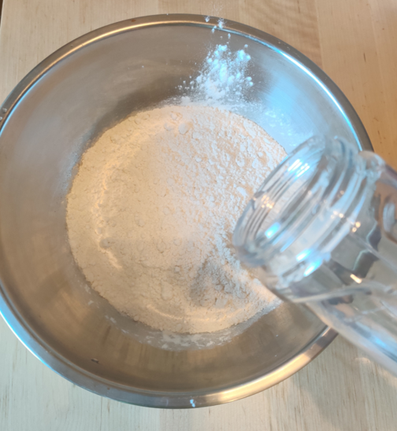
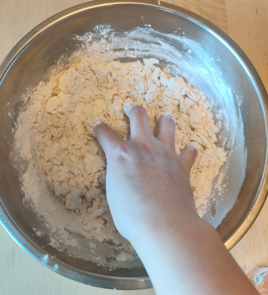
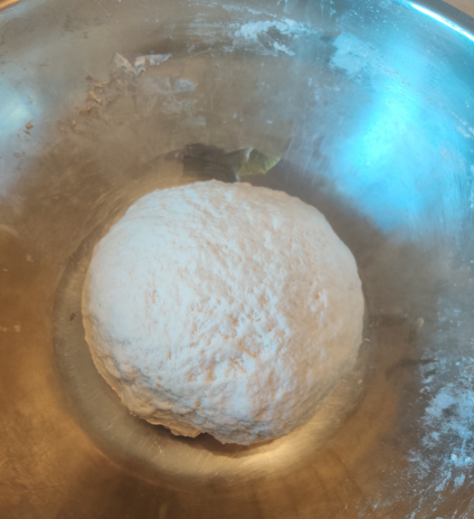
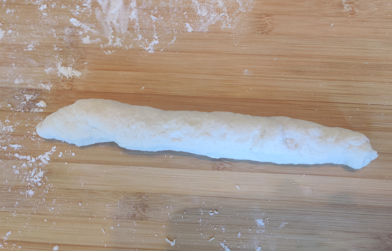
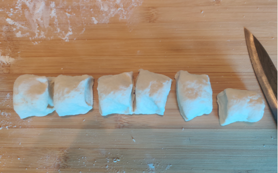
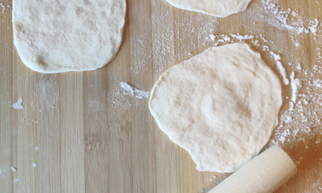

STEP 1: How to make dough
- 1. Put 1lb flour into a large mixed bowl.
- 2. Add 250ml of cold water in total in several times and stir.
- 3. Dip your hands in water and knead it into a smooth dough.
- 4. Cover with a cutting board and let stand for half an hour.



STEP 2: How to make dough
- 1. Cut a quarter from the finished dough.
- 2. Roll it repeatedly into a long strip of uniform thickness, about 3 centimeters in diameter.
- 3. Cut into small pieces of dough about every two centimeters.
- 4. Drop some flour on the cutting board.
- 5. Use a rolling pin to flatten the small dough.


